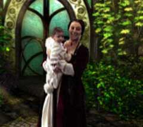

| 概要 | 用語集 | 地図 |
| 淡いヒント集 | ヒント集 | 的確なヒント集 |
| 攻略最短ルート |
| 時代選択へ戻る |
Tomahna

アトラスの書斎へ行くとよいと、キャサリンは言った。それでは、アトラスの書斎はどこなのだろうか? 答えは簡単である。上の画像に移っている扉を開けばよい。  アトラスの書斎に入ったら、レリーシャンの書を見つけよう。 この本は机のある場所とは違うところにある。部屋の中に、ガラスのような透明な容器に入った本を探してみよう。それを眺めているうちに、アトラスがあなたの元へ来るはずだ。 
アトラスがあなたに日記を渡したとき、サーヴェドロがレリーシャンの書を奪いどこかへ消えていくはずだ。 サーヴェドロが立っていた場所を見てみよう。一冊の本が落ちているだろう。それが、ジェナーニンへの接続書である。この本を開き、移っている映像に手をかざそう。 |
| 時代選択へ戻る |
| 概要 | 用語集 | 地図 |
| 淡いヒント集 | ヒント集 | 的確なヒント集 |
| 攻略最短ルート |
Myst III Exile
| 目次へ戻る | ページの上部へ |